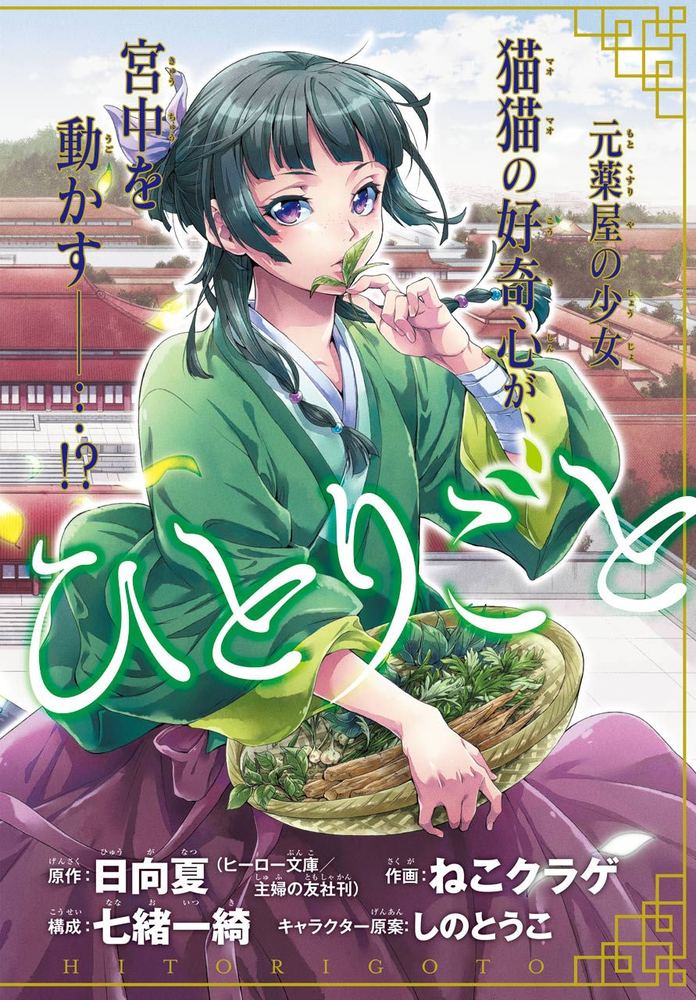

Manga, manhwa, and manhua - What's the difference?

I should probably preface this by saying that I haven't read much manhua, so as far as I can tell, the style is less distinct in my head than manga or manhwa.
As a general spoiler disclaimer: There will be spoilers all over this website, so read at your own risk!
I should probably preface this by saying that I haven't read much manhua, so as far as I can tell, the style is less distinct in my head than manga or manhwa.

The main place I've been reading fanfiction is Archive of Our Own, and it's mostly The Grandmaster of Demonic Cultivation's fault because there are just so many fics in that fandom.